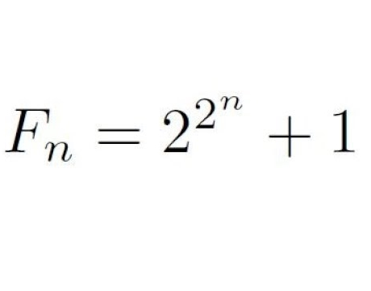
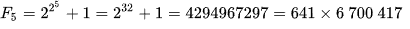

El matemático Pierre de Fermat formuló y estudió estos números, que tienen la forma:
donde n es un número natural y solo se conocen 5 números primos de fermat
Hasta ahora solo se conocen 5 números primos de fermat (3, 5, 17, 257, 65537).
Fermat conjeturó que todo número natural con la forma:
con n siendo natural, son números primos. Pero Euler probó que con n = 5, no es así, ya que:
siendo el número más pequeño de fermat que
no es primo
Un número de Fermat es igual al producto de todos los anteriores más 2.
Si n = 1, es verdad:
Si se cumple para k igual a n-1, se cumple para n.